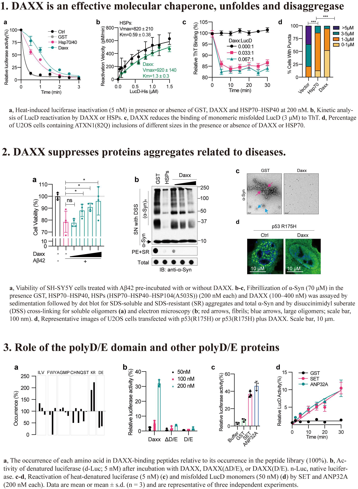

Research Focus
DAXX represents a new type of protein-folding enabler
Protein quality control systems are crucial for cellular function and organismal health. At present, most known protein quality control systems are multicomponent machineries that operate via ATP-regulated interactions with non-native proteins to prevent aggregation and promote folding, and few systems that can broadly enable protein folding by a different mechanism have been identified. Moreover, proteins that contain the extensively charged poly-Asp/Glu (polyD/E) region are common in eukaryotic proteomes, but their biochemical activities remain undefined. Here we show that DAXX, a polyD/E protein that has been implicated in diverse cellular processes, possesses several protein-folding activities. DAXX prevents aggregation, solubilizes pre-existing aggregates and unfolds misfolded species of model substrates and neurodegeneration-associated proteins. Notably, DAXX effectively prevents and reverses aggregation of its in vivo-validated client proteins, the tumour suppressor p53 and its principal antagonist MDM2. DAXX can also restore native conformation and function to tumour-associated, aggregation-prone p53 mutants, reducing their oncogenic properties. These DAXX activities are ATP-independent and instead rely on the polyD/E region. Other polyD/E proteins, including ANP32A and SET, can also function as stand-alone, ATP-independent molecular chaperones, disaggregases and unfoldases. Thus, polyD/E proteins probably constitute a multifunctional protein quality control system that operates via a distinctive mechanism.
